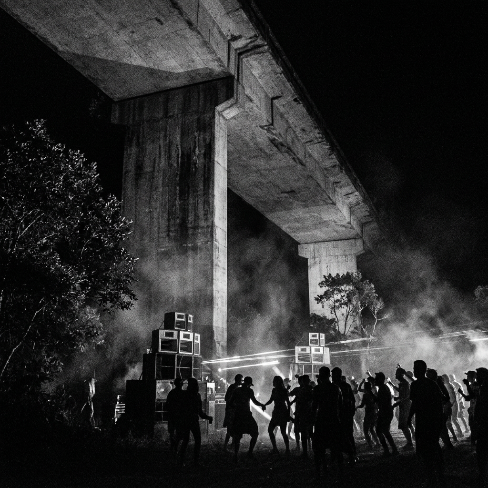
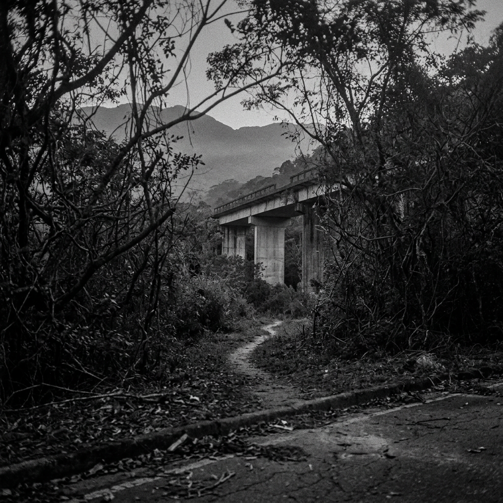

Vão sob viaduto desativado na Serra do Mar ativado como ponto de toque pirata em noites de baixa circulação e patrulha reduzida. Estrutura isolada, com acesso por trilhas, acostamento ou entradas não sinalizadas. Sistema de som transportado em vans. Montagem em até 40 min. Evacuação em cerca de 12. Graves reverberam no concreto e se dissipam pela encosta.
Fluxo orientado por redes, boca a boca e reconhecimento entre frequentadores recorrentes. Divulgação fragmentada. Local revelado poucas horas antes da ativação. Entrada sem sinalização explícita.


Ocupação recorrente do segundo viaduto desativado na Serra do Mar, região de Porto Novo (Caraguatatuba - SP). Estrutura isolada, cercada por mata densa e baixa circulação noturna.
Sistema de som montado sob o vão principal. Graves reverberam no concreto e se dispersam pela encosta. DJ em posição central ou móvel. Iluminação mínima: LED frio, pontos improvisados e fontes autônomas.
Acesso irregular, com entrada por trilhas, acostamento ou pontos não sinalizados. Deslocamento exige atenção ao terreno e à visibilidade reduzida.
Capacidade variável entre 200 e 600 corpos. Densidade concentrada sob o viaduto. Fluxo intermitente ao longo da madrugada.
Público diverso, majoritariamente jovem. Estética funcional: roupas escuras, resistência à umidade, pouca identificação. Interação guiada por contexto, não por formalidade.
Chegada após 00:00 recomendada. Pico entre 02:00 e 04:00. Dispersão gradual antes do amanhecer.
Registro de imagem desencorajado. Em algumas edições, proibido. Presença de controle informal no perímetro.
Consumo externo variável. Estrutura sem apoio fixo. Interação com desconhecidos faz parte da dinâmica. Reconhecimento ocorre por comportamento e permanência.